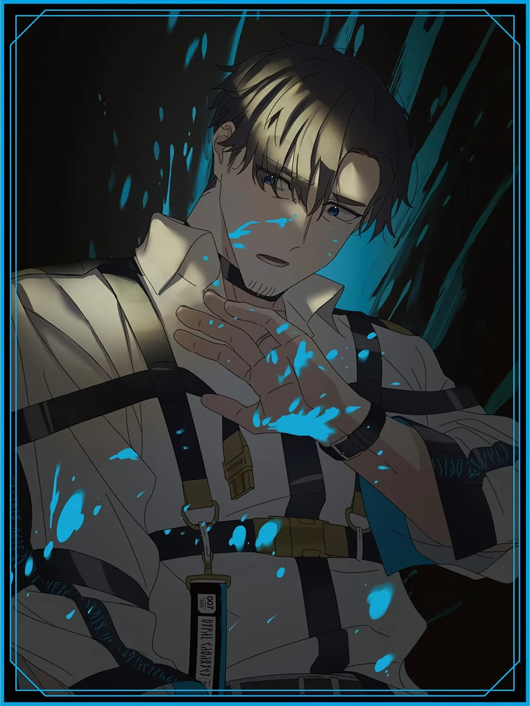

[ PRISONER FILE / 007 ]
KAZUI MUKUHARA
"Even though I was forgiven, it's all the same. Since I can't forgive myself, nothing will change, and I can't change anything."
VIEW TRIAL RECORD ↓
BASIC INFORMATION
Kazui is a nonchalant person, who often cracks jokes to lighten the mood. He's tall and muscular, despite looking slim. He seems to be experienced with martial arts.
PROFILE & ANALYSIS
e was raised to believe in rigid, conservative ideals from the couple, who tried their best to be exemplary role models to society. His first crush was a teacher of his in elementary school. In his adolescence, Kazui made a friend named Ryousuke Shinba, whom he remained close with in adulthood.
It is revealed in one of the timelines that Kazui graduated university and majored in physical education, and has taken some karate in his past. He aspired to be a role model like his parents and grew up to be a well-respected police officer praised by everyone around him. He built a remarkable career for himself and was expected to climb to greater positions. Because of his career, it would be beneficial for him to marry a woman and start a family. Despite this, he knew that truly wanting that life for himself was not possible. Secretly, Kazui was a gay man in love with Ryousuke, and he knew that being exposed would ruin his image and reputation. As a result, he kept it as a secret from everyone and pursued the ideal version of himself he was expected to become.
At some point during his life, Kazui marries his female colleague whom he knew had romantic feelings for him, Hinako Mukuhara, in order to maintain this perfect image, and moves into an apartment with her. Because of his sexual orientation, which he hid from her as well, he couldn't have a sexual relationship with her, which Hinako accepted with kindness. Even if Kazui did not love her romantically, he still considered her his best friend and most trusted confidant.
As the years passed, it became more difficult for Kazui to maintain the image he crafted. One night, he invited Ryousuke over to his apartment for a drink. Under the influence of alcohol, Kazui confessed his feelings to Ryousuke, which was met with an abrupt expression of disgust. A heartbroken Kazui quickly tried to play off his confession as a joke. Later that night, Kazui tried to pull himself back together, but the years of emotional suppression building up became too much for him to bear. This resulted in him confessing everything about his past and true feelings to Hinako. It is implied she wanted to talk about it further but Kazui pushed her away.
The following morning, presumably unable to cope with the truth, Hinako threw herself off their apartment balcony and committed suicide. When Kazui found his wife dead, he mourned her deeply. He blamed himself for her suicide and deeply regretted his confession
TRIAL RECORD
Jump directly to this prisoner’s analysis in each Trial.